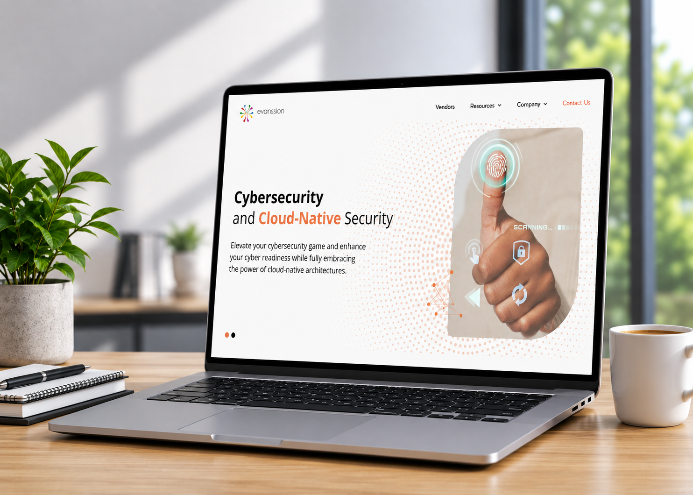

01 / Cybersecurity distribution
Evanssion
A sharp corporate platform for a cybersecurity and cloud-native security distributor serving the Middle East and Africa.
RoleUI development, responsive implementation, motion
Visit Live Website →